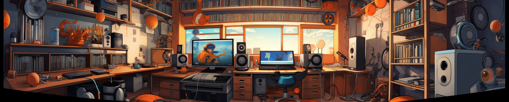

Qui suis-je ?
Personnalité
Soucieux de l'exactitude et de la pertinence dans chaque tâche que j'entreprends, j’aime assumer la responsabilité de mes actions et je m’efforce de les mener à bien de manière méticuleuse. Mon intégrité est une qualité précieuse qui me guide dans mes interactions avec les autres et dans mes décisions personnelles.
Mon dynamisme est une force motrice qui me pousse à avancer et à atteindre mes objectifs. J’ai une aversion profonde pour la paresse et la malhonnêteté, car elles sont en contradiction avec mes valeurs. En effet, je préfère utiliser mon temps de manière productive et efficace, détestant la sensation de gaspillage de temps inutile. De plus, je suis conscient de l'importance d'apprendre de mes erreurs et de prendre de meilleures décisions à l'avenir. Cette attitude réfléchie et autocritique me permet de grandir en tant qu'individu et de m’améliorer constamment.
De nature pacifiste, je cherche à éviter les conflits inutiles. Cependant, je comprends également que certains conflits peuvent être inévitables ou même nécessaires dans certaines situations. Je suis prêt à faire face à ces défis lorsque cela est justifié, en gardant toujours à l'esprit d’écouter les opinions d’autrui avec respect, dans le calme et la communication positive.
Parcours
- 2022 - Bac général mention très bien - Mathématiques, NSI et option Maths Expertes - Lycée privé Notre Dame des Victoires (Voiron 38)
Je suis actuellement en première année du BUT informatique de l'IUT2 de Grenoble (UGA). La formation dure 3 ans. Après l'obtention de mon diplôme, j'envisage de réaliser un master en informatique afin d'approfondir mes connaissances et me spécialiser davantage en tant que développeur informatique.
Passions et centres d'intérêt
Sportif depuis mon plus jeune âge, j'apprécie grandement les sports d'équipes tels que le volleyball, le basketball et le football. Je pratique d'ailleurs le volley en sport universitaire depuis mon entrée en études supérieures.
Friand de musique, je passe beaucoup de temps à écouter de la musique que ce soit pendant que je mange ou que je travaille. J'aime aussi beaucoup la danse, un de mes passe-temps préférés.
En 2021, j'ai découvert l'univers de la littérature japonaise, principalement le manga. J'apprécie en discuter et faire découvrir certaines oeuvres à mon entourage.